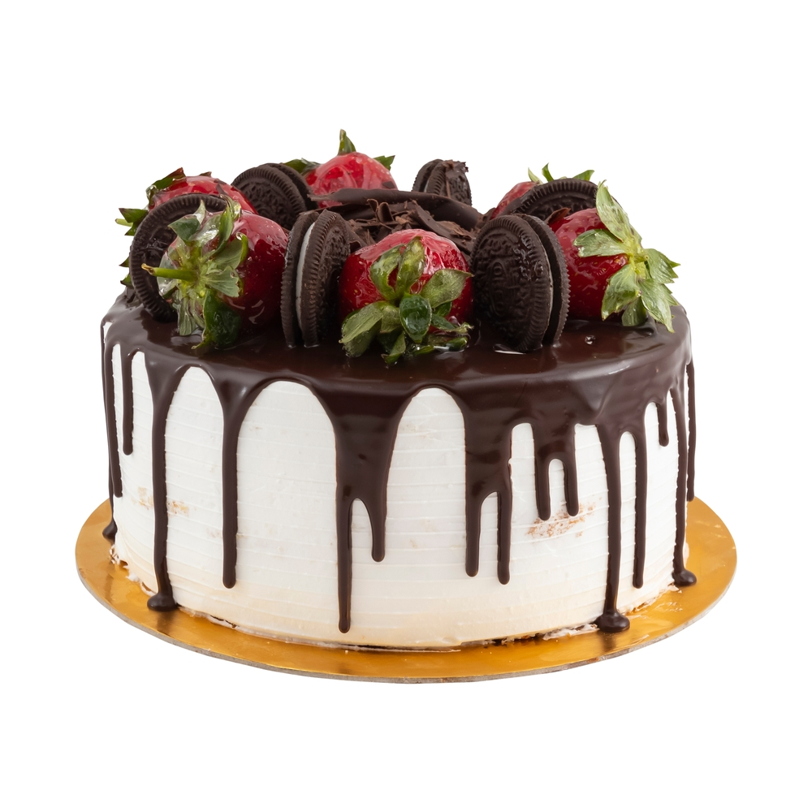

Ingridients
- 1 box of strawberry cake mix
- 1 cup of water
- 1/2 cup of vegetable oil
- 3 large eggs
- 1 cup of crushed Oreos (about 8-10 cookies)
- 1/2 cup of milk
- 1 cup of heavy whipping cream
- 1 teaspoon of vanilla extract
- 1 cup of powdered sugar
- 1/2 cup of Oreo crumbs for decoration
- Fresh strawberries for decoration
Preparation Instructions
- Preheat the oven to 350°F (175°C) and grease and flour two 9-inch round cake pans.
- In a large bowl, combine the strawberry cake mix, water, vegetable oil, and eggs. Mix according to the instructions on the cake mix box until smooth.
- Fold in the crushed Oreos into the cake batter, mixing gently until combined.
- Divide the batter evenly between the two prepared cake pans.
- Bake the cakes for 25-30 minutes, or until a toothpick inserted into the center comes out clean.
- Allow the cakes to cool in the pans for 10 minutes, then remove from the pans and transfer them to a wire rack to cool completely.
- While the cakes are cooling, make the frosting by beating together the heavy whipping cream, powdered sugar, and vanilla extract until stiff peaks form.
- Once the cakes are completely cooled, spread a layer of frosting on top of the first cake layer.
- Place the second cake layer on top and frost the top and sides of the entire cake.
- Decorate the cake with Oreo crumbs and fresh strawberries on top.
- Chill the cake in the fridge for at least 30 minutes before serving to allow the frosting to set.